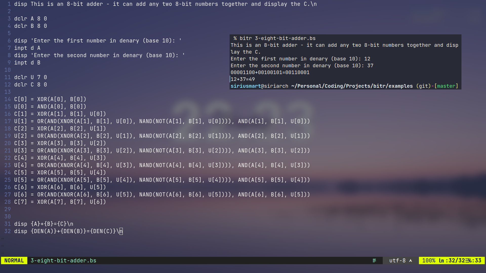

Overview
BitScript is an esoteric language designed to simulate logic gates.

Bitr is a minimal BitScript interpreter written in Rust, it does not include any external dependencies.
(Stands for bit-runner, pronounced bitter.)
Features
- BitScript is a text based logic gate simulator.
- BitScript is Turing complete, allowing for complex designs.
- BitScript contains a file based module system (components), which declutters code.
Examples of what you can do with BitScript can be found in examples.
Roadmap
- Assigning values to a single cell, whole array and range or cells.
- Common logic gates.
- Input with base 8, 10 and 16 numbers.
- Goto, label, and if statements.
- Reusable components.
- Arrays.
- Global std library of components.
- Unicode characters from binary.
- Running system commands
- Browser interpreter with Web Assembly.
Quick start
Install bitr from crates.io using the command below, or download a prebuilt binary.
Make sure cargo is present in your system.
cargo install bitr
To confirm it is installed, run bitr.
Syntax
This section is the guide to writing BitScript. It also act as the documentation of BitScript, so if you are just searching for a specific syntax, use the search button above.
Hello world
To display the text "Hello world", create a file hello_world.bs.
# hello_world.bs
# this is a comment
disp Hello world\n # disp [string]
Save the file and run bitr display. Alternatively, you can run it in the repl, start the repl with bitr.
Debug
dbg display values with no formatting.
dbg 1 # 1
dbg AND(1, 0) # 0
dbg NOT(11001101) # 00110010
dbg DEN(1111) # 15, DEN for denary (base 10)
Display
disp display strings with formatting arguments. Use singe quotes ('') to preserve leading/trailing spaces, and curly braces ({}) for values.
disp This is a string.\n # This is a string.
disp 'Enter a value: ' # Enter a value:
disp 1 and 1 is {AND(1, 1)} # 1 and 1 is 1
Variables
There are no data types in BitScript, because all data are stored in 1d array of bits.
Declare
dclr is used declare variables, the size (length) of variables cannot be changed once created, and variable names can only contain alphabet and underscores.
dclr first_var 4 # creates a variable of length 4
dclr another_var 4 1 # creates a variable of length 4, initialise it with 1s
Assigning to variables
Variables can be displayed as a whole, individual cells or ranges.
first_var = another_var # sets first_var to 1111
first_var[0] = 0 # sets the least significant bit to 0, first_var is now 1110
first_var[2..4] = 00 # sets the 2-3rd least significant bit to 00, first_var is now 0010
first_var[..] = 0 # ranges can be unbounded, in this case it sets first_var to 0000
Variables can also be used as index for another variable, for example.
first_var[..DEN(11)] = another_var[1..] # denary of `11` is 3
first_var[AND(1, 0)] = 2
Displaying variables
In the same sense that it is assigned, it can be displayed the same way with dbg and disp.
dbg another_var # 0000
dbg another_var[0] # 0
dbg another_var[NOT(0)..] # 000
disp another_var is {another_var}
disp the least significant bit of another_var is {another_var[0]}
disp the other 3 bits are {another_var[NOT(0)..]}
Gates
Logic gates are the only way to process variables in BitScript, and that's the entire point.
dbg NOT(0) # 1
dbg AND(1, 0) # 0
dbg OR(1, 0) # 1
dbg NOR(1, 0) # 0
dbg NAND(1, 0) # 1
dbg XOR(1, 0) # 1
dbg XNOR(1, 0) # 0
Short hand expression
dbg NOT(1101) # 0010, same as NOT(1, 1, 0, 1)
dbg AND(1101) # 0, same as AND(1, AND(1, AND(0, 1)))
dbg OR(1101) # 1, same as OR(1, OR(1, OR(0, 1)))
dbg NOR(1101) # 0, same as NOR(1, NOR(1, NOR(0, 1)))
dbg NAND(1101) # 1, same as NAND(1, NAND(1, NAND(0, 1)))
dbg XOR(1101) # 1, same as XOR(1, XOR(1, XOR(0, 1)))
dbg XNOR(1101) # 0, same as XNOR(1, XNOR(1, XNOR(0, 1)))
Single values, whole arrays, and ranges can be used in gates.
In conclusion, this is how each gate behaves.
| Gate | Behavior |
|---|---|
NOT | Flips all bits to its opposite. |
AND | Only returns 1 if all bits are 1. |
OR | Returns 1 if any of the bit is 1. |
NOR | NOT(OR) |
NAND | NOT(AND) |
XOR | Returns 1 if there is an odd number of 1s. |
XNOR | Returns 1 if there is an even number of 1s. |
Input
BitScript can take input from stdin.
dclr user_input 4
disp 'Enter a 4 bit number: '
inpt user_input
disp You have entered: {user_input}
In this example, if the user enters 1011, then the program will tell the user that he entered 1011. Simple as that.
Casting
Since there is only one datatype in BitScript, casting isn't really a thing.
However, what is a possible is accepting inputs of octal, denary, and hexidecimal numbers. And opposite to that - displaying variables in that format.
Input casting
dclr store 0 # decalre a dummy variable
inpt store # now accepting only binary numbers
inpt o store # now accepting only octal numbers
inpt d store # now accepting only denary numbers
inpt h store # now accepting only hexidecimal numbers
Output casting
dbg 1100 # 1100
dbg OCT(1100) # 14
dbg DEN(1100) # 12
dbg HEX(1100) # C
Assign casting
dclr store 0
store = 1100 # 1100
store =o 14 # 1100
store =d 12 # 1100
store =h C # 1100
Functions
All BitScript files are valid functions, each file represents a single function.
Syntax
reg [component name] [file name] # registers the component
[conponent name](params) # uses the component
Parameters
The parameters are passed into the input buffer, which can be read by the component using inpt.
# echo.bs
dclr A 8 0
inpt A # takes 1 params
disp You entered {A}!
Use the function
# run-function.bs
reg echo echo
echo(11111111)
Return values
Values can be returned using the exit keyword.
# add-function.bs
# just a simple 8 bit adder
dclr A 8 0
dclr B 8 0
inpt A
inpt B
dclr U 7 0
dclr C 8 0
C[0] = XOR(A[0], B[0])
U[0] = AND(A[0], B[0])
# snippet
C[7] = XOR(A[7], B[7], U[6])
exit C # returns the value of C
Use the function in an 8 bit adder program.
# run-function.bs
reg add add-function
# create two 8 bit variables
dclr A 8 0
dclr B 8 0
# assign them with values
A =d 11
B =d 23
# use the functon `add`
disp add(A, B)
Commands
Repl
Running bitr without any arguments will start the repl, all variables declared in the repl will be remembered until the repl ends.
bitr # launches the repl
Run file
To run a file, put the file name (with or without .bs extension) as the first argument.
bitr [file name].bs # runs [file name].bs
bitr [file name] # the `.bs` extension is not required
Informational
Informational commands prints out information and does nothing else.
bitr help # displays the help message
bitr version # displays the version of bitr installed
Changelog
v0.1.1
Added
- File based module/function system
v0.1.0
Added
- Initial commit
Contributing
If you are able and like the project so far, consider contributing through one of the following ways.
Examples
Add your code to examples, for that you can either create a pull request or contact me through any ways (e.g. open an issue).
Docs
If you've noticed any undocumented behavior that seems resonable, you can either open a pull request with the docs edited, or contact me. If you think it's a bug, open an issue.
Adding features/fixing bugs
If you somehow managed to understand my code, it would be great if you can add features/fix bugs in Bitr. Open a pull request if you do.
Your code should generate no warnings with cargo clippy, unless there are strong reasons to write it not according to clippy.